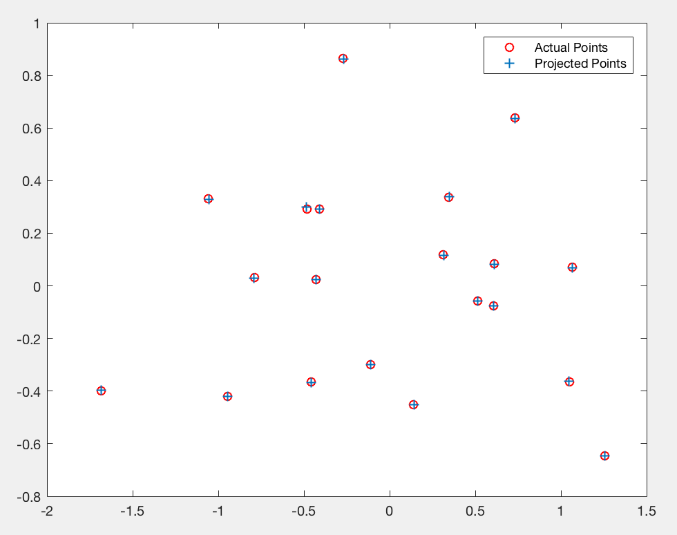

Project 3 / Camera Calibration and Fundamental Matrix Estimation with RANSAC
The project is about camera and scene geometry.- Part One - camera project matrix is estimated mapping the 3D coordinates to image coordinates.
- Part Two - fundamental matrix is estimated and it links the points in one image to epipolar lines in another.
- Part Three - RANSAC is used to estimate fundcamental matrix with unreliable SIFT matches.
- Part Four - Normalization
1. Part One Camera Projection Matrix
1.1 Algorithms
The goal is to compute the projection matrix that goes from world 3D coordinates to 2D image coordinates. Recall that using homogeneous coordinates the equation for moving from 3D world to 2D camera coordinates is:
To solve for the projection matrix. I need to set up a system of equations using the corresponding 2D and 3D points:
I used SVD to solve this.
1.2 Code
A is the matrix I constructed as discussed above. M is the projection matrix.
[U, S, V] = svd(A);
M = V(:,end);
M = reshape(M,[],3)';
1.3 Result
2. Part Two Fundamental Matrix Estimation
2.1 Algorithms
The next part of this project is estimating the mapping of points in one image to lines in another by means of the fundamental matrix. The definition of the Fundamental Matrix is:
2.2 Code
A is the matrix I constructed as discussed above and F_matrix is the fundamental matrix. I use SVD to solve this.
[U,S,V]=svd(A);
f=V(:,end);
F_matrix = reshape(f,[3 3])';
2.3 Result
Estimated fundamental matrix is:
The figures with epipolar lines are shown below. It is able to see that some epipolar lines do not exactly pass through the interest points, in other words, a little shift, which will be improved after doing normalization in part four.
3. Part Three Fundamental Matrix with RANSAC
3.1 Algorithms
steps of RANSAC
- decide sample size x / definition of distance d / threhold a
- randomaly select x points
- find fundamental matrix based on x points
- calculate "distance" d for every points we have if d < a, we regard the point as inlier.
- record number of inliers for the fundamental matrix
- repeat the process certain times of iterations
- the fundamental matrix has the most inliers is the best and chosen one as result.
3.2 Code
I have sample size as 8, it runs 500 iterations, and the threhold is 0.04.
L=size(matches_a,1);
sample = 8;
best=0;
itera = 500;
threshold=0.04;
for K=1:1:itera
% step 1 - find samples and calculate fundamental matrix
c=randperm(L);
rnums = c(1:sample);
Fmatrix = estimate_fundamental_matrix(matches_a(rnums,:),matches_b(rnums,:));
% step 2 - calculate the score and decide inliers
inliers= [];
d = zeros(L);
for j=1:1:L
ma=[matches_a(j,:) 1];
mb=[matches_b(j,:) 1];
d(j)=sum(abs(mb*Fmatrix*ma').^2)^(1/2);
if d(j)<=threshold
inliers = cat(1, inliers, j);
end
end
% step 3 - if inliers reach max, record the results
if length(inliers)>best
best=length(inliers);
Best_Fmatrix=Fmatrix;
inliers_a=matches_a(inliers,:);
inliers_b=matches_b(inliers,:);
end
end
disp(best);
3.3 Result
Matchings before run ransac_fundamental_matrix
Matchings after run ransac_fundamental_matrix
The number of iterations is 500, the threshold is 0.04 and the result shows that there are 560 inliers while the total number is 825. Thus, the inlier rate is 67%.


Matchings before/after run ransac_fundamental_matrix
The number of iterations is 500, the threshold is 0.04 and the result shows that there are 517 inliers while the total number is 825. Thus, the inlier rate is 62%.
4. Part Four - Normalization
4.1 Algorithms
I wrote a function in the same file as estimate_fundamental_matrix, and it is called Normal_Process. The function produce Ta and Tb which will be used in last step of estimate_fundamental_matrix as follows:
4.2 Code
function [ u, v, Ta ] = Normal_Process(u,v,Points_a)
% Get Average
avgu=sum(u)/size(Points_a,1);
avgv=sum(v)/size(Points_a,1);
% Substract Average
d=((u-avgu).^2+(v-avgv).^2).^(1/2);
% Estimate Standard Deviation
s=std(d);
% Normalization through Linear Transformations
Ta=diag([1/s,1/s,1])*[1, 0, -avgu; 0, 1, -avgv; 0, 0, 1];
PriA=Ta*([Points_a,ones(size(Points_a,1),1)]');
u=PriA(1,:)';
v=PriA(2,:)';
end
4.3 Result
Matchings before/after run ransac_fundamental_matrix with normalization
The number of iterations is 500, the threshold is 0.04 and the result shows that there are 671 inliers while the total number is 851. Thus, the inlier rate is 78%, which is larger than 62%, the result achieved without normalization.
Matchings w/o normalization
The number of iterations is 8000, the threshold is 0.05. The result without normalization is shown on the left while the result with normalization is shown on the right. The accuracy does increase based on the images.